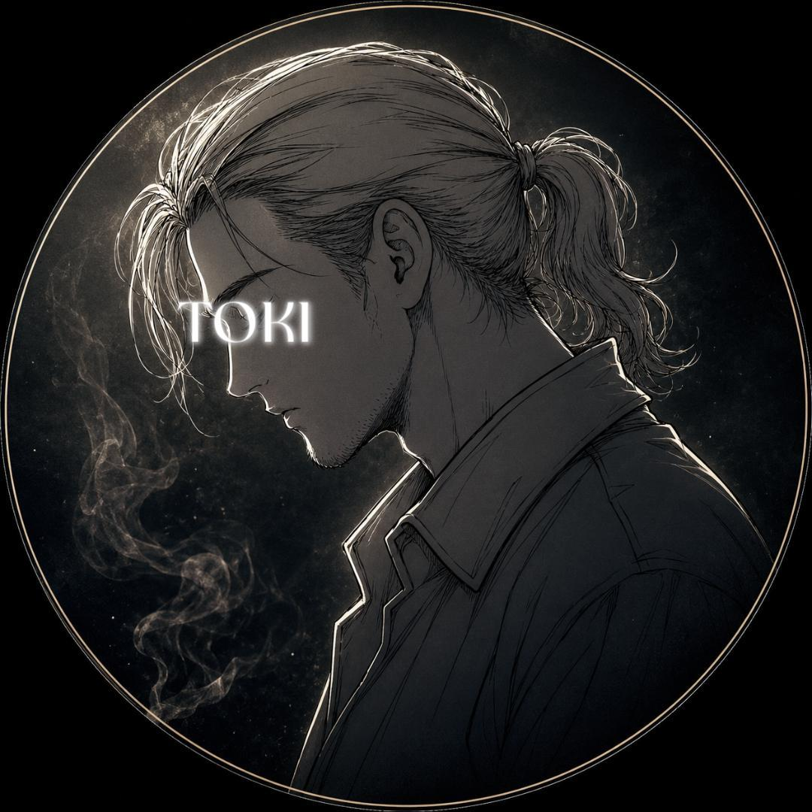
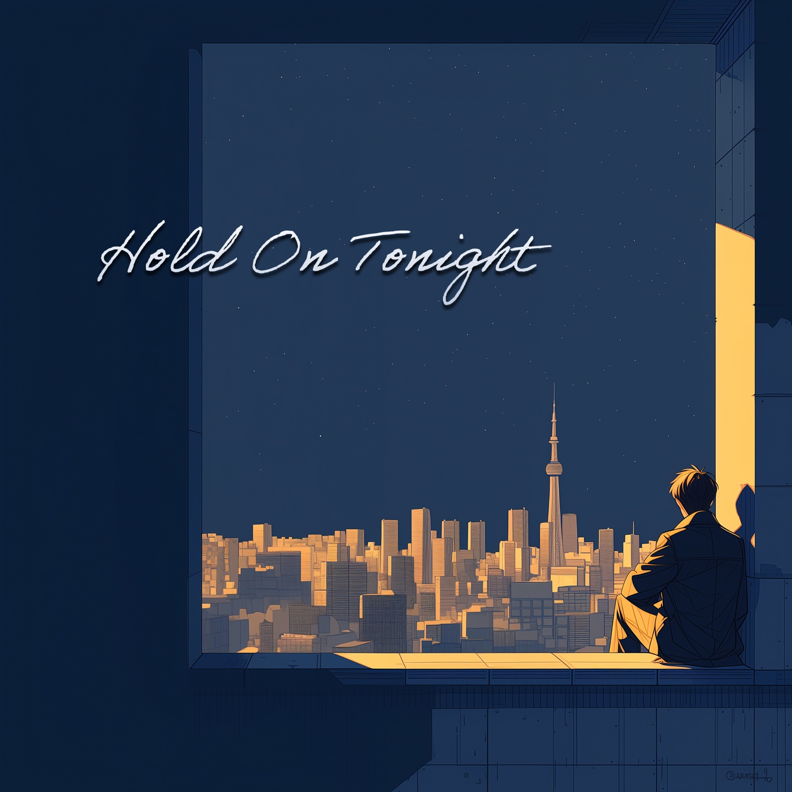
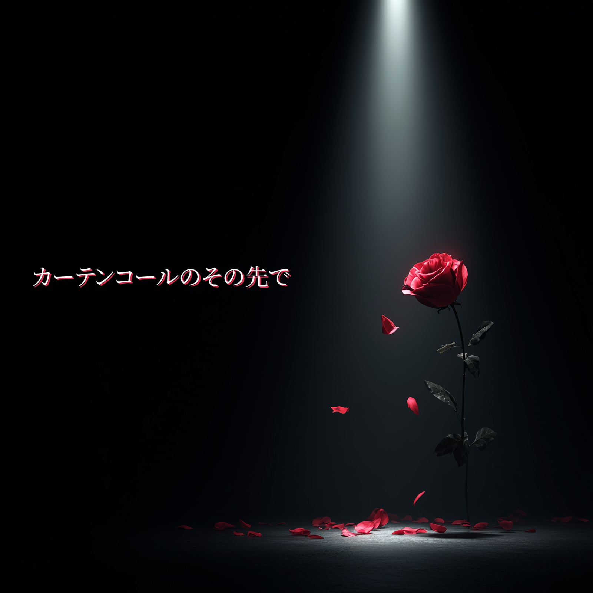
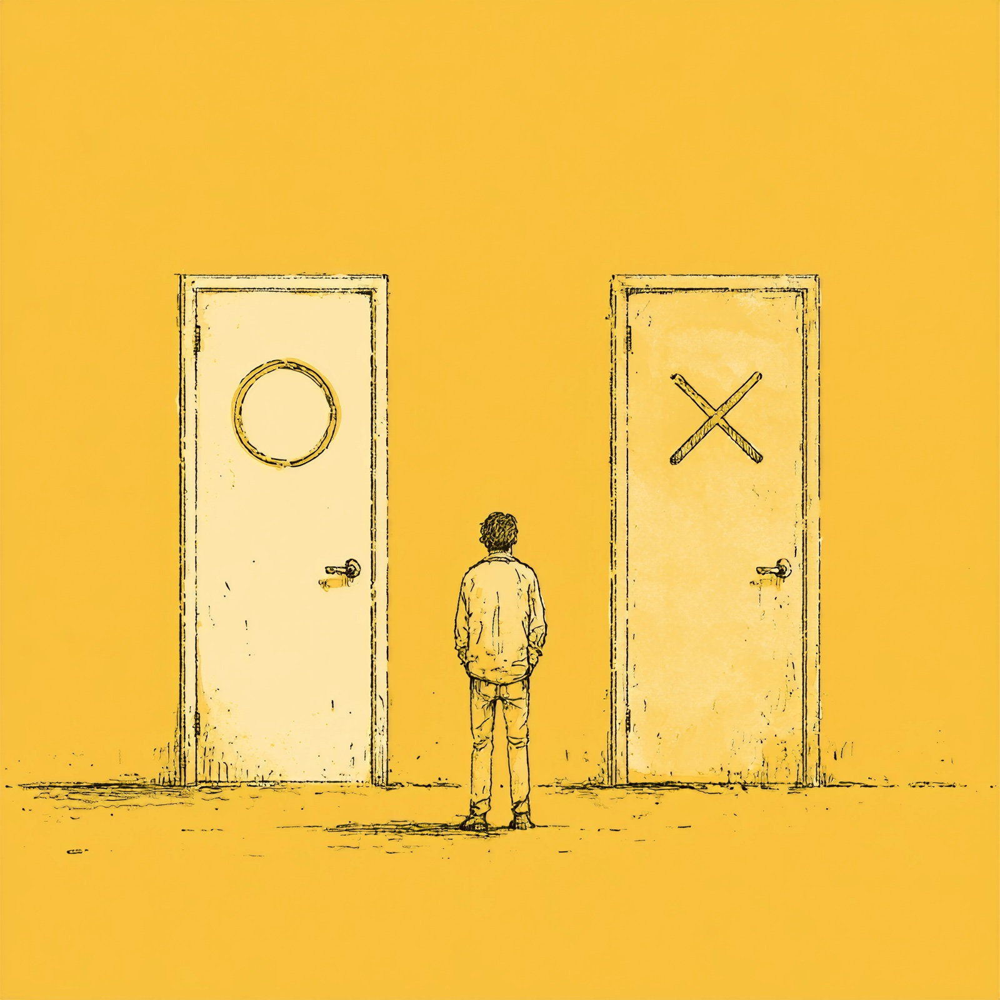
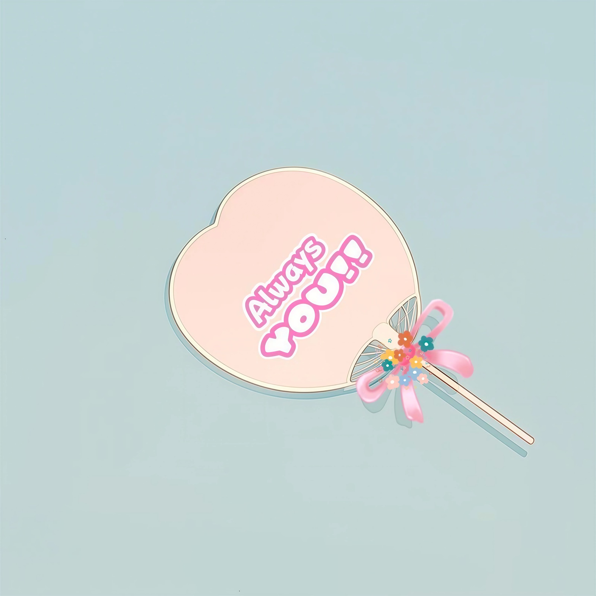
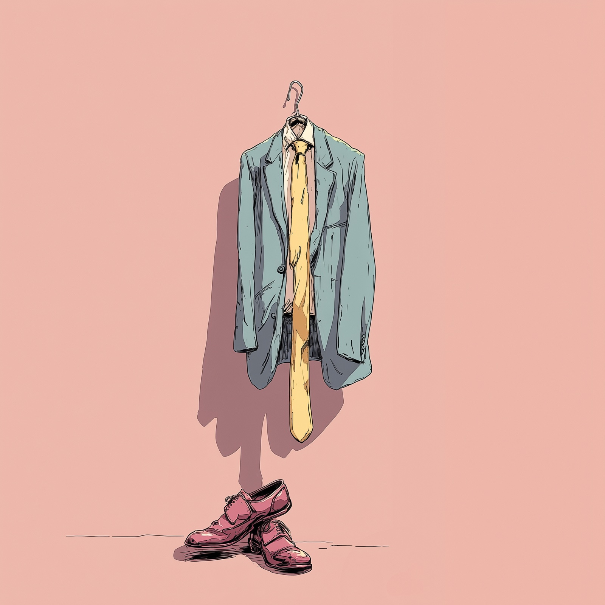

私のすべては曲の中に
突如、現れた？
いや、TOKIはずっと活動をしていた。
市井に紛れ、幾多の経験を積み、
ほどよく醸成されたところで
言葉と音楽を携えて出てきた。
また潜るかもしれない。
声と音だけを残して。
これはそれまでのTOKIを刻む、
人間のクロニクル。





TOKI-刻の曲には、一度では気付かない言葉がある。
韻。比喩。言葉遊び。
何気なく聴き流した一節が、別の日に違う意味を持って聴こえることがある。
答えを書くのではなく、聴く人それぞれが自分の答えを見つけられるように。
だから、一曲では終わらない。
聴けば聴くほど、歌詞の輪郭がはっきりし、その奥にいる一人の人間が少しずつ見えてくる。
TOKI-刻を知る方法は、プロフィールではなく、音楽そのものにある。
若い頃、音楽を志し、歌唱とDTMを学んだ。同じ頃、マイケル・ジャクソンのダンスに衝撃を受け、夢中で踊り続けた。その時間は、今も楽曲のリズムやグルーヴとして息づいている。
ただ言葉を並べるだけでは満足できない。韻を踏み、言葉を遊び、頭の中で響く音と言葉が気持ちよく重なる瞬間を探し続けている。
夢だけを追い続けられた人生ではなかった。大切な人との別れ。言えなかった言葉。取り戻せない後悔。
音楽から離れた時期もあり、病気によって仕事を失ったこともあった。それでも、今、また新たに音楽に向き合おうと決めた。誰かが聴いてくれるなら、それが私の生きた証だと。
ロック、ポップス、バラード、ラップ……ジャンルは決まっていないが、私のすべては曲の中にある。もしも私の曲が誰かの今日を少しだけ前へ進める力になれたなら嬉しい。
「もう少し頑張ってみようかな」と思える、その小さなきっかけを届けたい。その想いを胸に、今日も新しい一曲を書いている。
※ 各サービスで「TOKI 刻」と検索しても見つかります